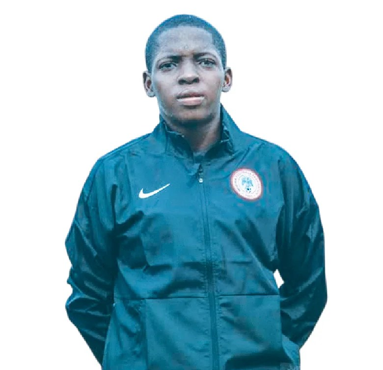

Flamingos captain plans outreach after World Cup triumph

Nigeria captain Harmony Chidi says she plans to launch an outreach initiative to help people facing difficult circumstances, using part of the rewards promised to the Flamingos after their World Cup victory. The 17-year-old said she would share details of her plans soon. She previously visited pregnant women and sick patients at a hospital in Owerri, Imo State, in July, and has said she tries to help others with what she has.
Chidi led Nigeria to a 2-1 win over Japan in the final on November 7, securing the country’s first FIFA U-17 Women’s World Cup title and making Nigeria the first African nation to win the tournament. The team’s achievement was followed by several announced rewards. President Bola Tinubu approved a five-year Federal Government Savings Bond of ₦100m for each player, to be held until they turn 18. Head coach Akeem Busari was awarded N100m in cash, while technical crew members were allocated N50m each.
The Senate pledged N100m to the team. Lagos State Governor Babajide Sanwo-Olu announced N10m for each player and coaching crew member, along with iPhone 17 Pro Max devices and other gifts.
Chidi has described overcoming family and career challenges on her path to the title. After her father died early, her mother opposed her football ambition, while her grandmother encouraged her to continue until her death. Chidi has also credited her foster father, Prince Chidi, who owns her grassroots team, Imo Strikers, with supporting her ambitions. A serious injury had ruled her out of the previous tournament, but she recovered to captain Nigeria to victory in Morocco.
Source: Punch